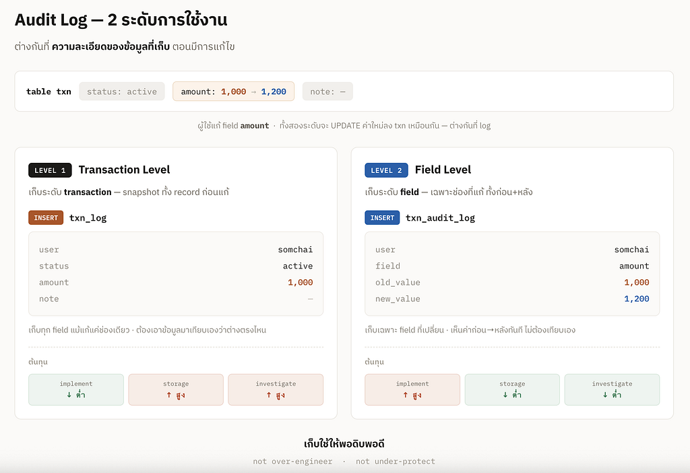

System Design — Audit Log
มาออกแบบ audit log ตามระดับการใช้งานกันนะคะ

ฉันนับว่าการออกแบบ system — audit log คือ มรดกตกทอดชิ้นหนึ่ง ที่ฉันได้มาจากพี่ๆ ที่ทำงานตอนที่ฉันยังเป็นน้องน้อย และฉันก็ส่งต่อมรดกนี้ให้น้องๆ ทุกครั้งที่มีการ implement system ที่ required audit log ค่ะ
ในบทความนี้ ฉันอยากเล่าถึงมรดก
มรดกของฉัน
ฉันจะ clarify requirement ให้ชัดค่ะ ว่า user มีการใช้งาน audit log ในระดับไหน เพื่อไม่ให้ออกแบบการเก็บข้อมูลเกินการใช้งาน เพราะนั่นหมายถึง การลงทุนในการพัฒนาระบบที่ใช้เงินสร้างของมากเกินความจำเป็น แต่ก็ต้องระวังอย่างมากด้วยว่า ไม่เก็บข้อมูลน้อยไปจนขาดแคลนกว่าการใช้งานจริงค่ะ
Audit Log ไม่ใช่ยิ่งเก็บเยอะยิ่งดี แต่ต้องเก็บให้เหมาะกับความเสี่ยงของธุรกิจ
เพราะ Audit Log ทุกบรรทัด คือ ต้นทุนทางธุรกิจ
ขอยกตัวอย่างให้เห็นภาพชัดๆ ด้วย requirement 2 ระดับการใช้งานนะคะ
ระดับที่ 1 Audit log — Transaction Level
เก็บข้อมูลเปลี่ยนแปลงในระดับ transaction เพื่อให้ทราบว่า
ใครแก้ — แก้เมื่อไหร่ — แก้อะไร
ถ้าต้องการดูการเปลี่ยนแปลงของข้อมูล ต้องนำข้อมูลมาเปรียบเทียบเอง
- การจัดเก็บ
- ใช้คำสั่ง insert ข้อมูลก่อนแก้ไว้ใน table txn_log และใช้คำสั่ง update ข้อมูลใหม่ที่ทำการแก้ลงไปที่ table txn
- ระบบเก็บข้อมูลครบ แต่ไม่เปรียบเทียบความต่างให้ ต้องใช้เวลาในการ manual investigation หาการเปลี่ยนแปลงของข้อมูลเอง - ข้อดี
- cost of implement ต่ำ จากการ insert txn ลงใน table txn_log เท่านั้น ง่ายต่อการ coding - ข้อเสีย
- cost of storage data มีค่าใช้จ่ายสูงหาก transaction data มีขนาดใหญ่ เพราะเก็บเหมารวมหมด
- cost of investigation สูง จากการต้องตรวจสอบความต่างเอง
— — — — — — — — — — — — — — — — — — — — — — — — — — — — — — — — — — — — — —
ระดับที่ 2 Audit log — Field Level
เก็บข้อมูลเปลี่ยนแปลงในระดับ field เพื่อให้ทราบว่า ใครแก้ — แก้เมื่อไหร่ — แก้อะไรแต่ๆๆๆ เป็นอะไรในระดับ field
- การจัดเก็บ
- โดยใช้คำสั่ง insert เฉพาะค่าใน field ก่อนแก้ และหลังแก้ไว้ใน table txn_audit_log และใช้คำสั่ง update ข้อมูลใหม่ที่ทำการแก้ลงไปที่ table txn
- ระบบเก็บเฉพาะข้อมูล field ที่เปลี่ยนแปลง ง่ายต่อการ investigation หาข้อมูลที่ต้องการตรวจสอบ - ข้อดี
- cost of storage data มักต่ำกว่าในกรณีที่ข้อมูลเปลี่ยนแปลงเพียงบาง field
- cost of investigation ต่ำ เพราะใช้เวลาน้อยในการตรวจสอบการเปลี่ยนแปลงของข้อมูล - ข้อเสีย
- cost of implement สูง จากการที่ต้องไล่ coding ราย field
เก็บใช้ให้พอดิบพอดี
Not over engineer
Not under-protect
ขอให้ทุกท่านสนุกกับ system design ค่ะ ^^